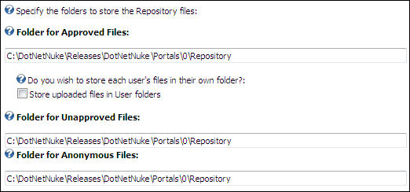

Setting the Folders to Store Repository Files
How to set the options that manage file storage for the Repository module.
-
- Maximize
 the Repository Settings section.
the Repository Settings section.
- In the Folder for Approved Files text box, enter/edit the full path to the location where the Repository folder will be located for storing approved files.
E.g. C:\Inetpub\WWWRoot\DNN20\Portals\0\Repository
- At the Do you wish to store each user's files in their own folder?, select from these options:
- Mark
 the check box at Store uploaded files in User folders to store each user's files within their own separate folder inside the Approved Files folder.
the check box at Store uploaded files in User folders to store each user's files within their own separate folder inside the Approved Files folder. - Unmark
 the check box to store all approved files in the Approved Files folder.
the check box to store all approved files in the Approved Files folder.
- At Folder for Unapproved Files text box, enter/edit the full path to the location where the Repository folder will be located for storing unapproved files.
E.g. C:\Inetpub\WWWRoot\DNN5\Portals\0\Repository\Unapproved
- At Folder for Anonymous Files text box, enter/edit the full path to the location where the Repository folder will be located for storing anonymous files.
E.g. C:\Inetpub\WWWRoot\DNN5\Portals\0\Repository\Anonymous
-

Setting the Folders to store Repository Files